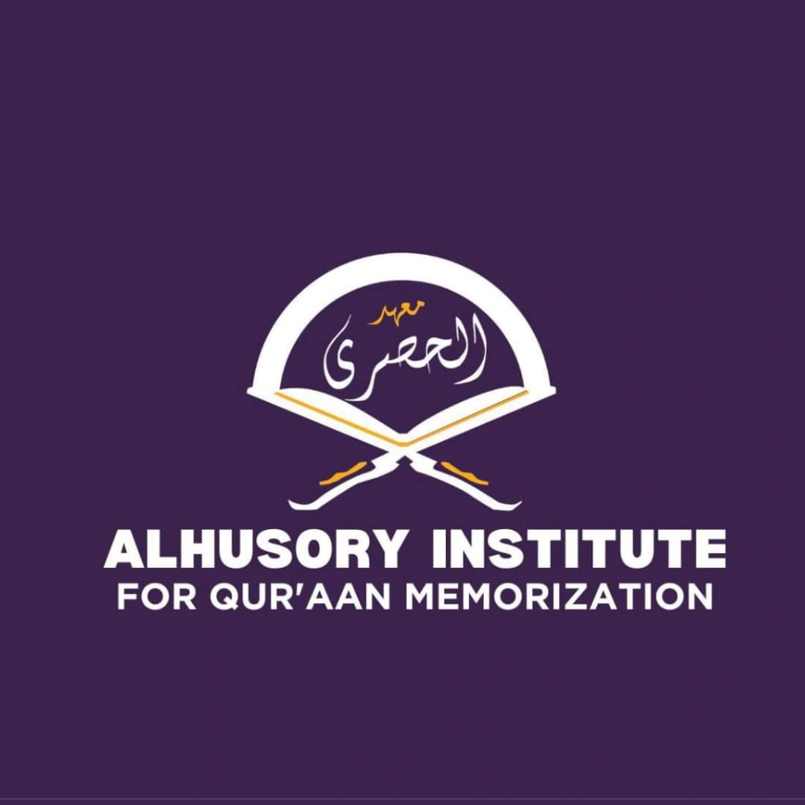
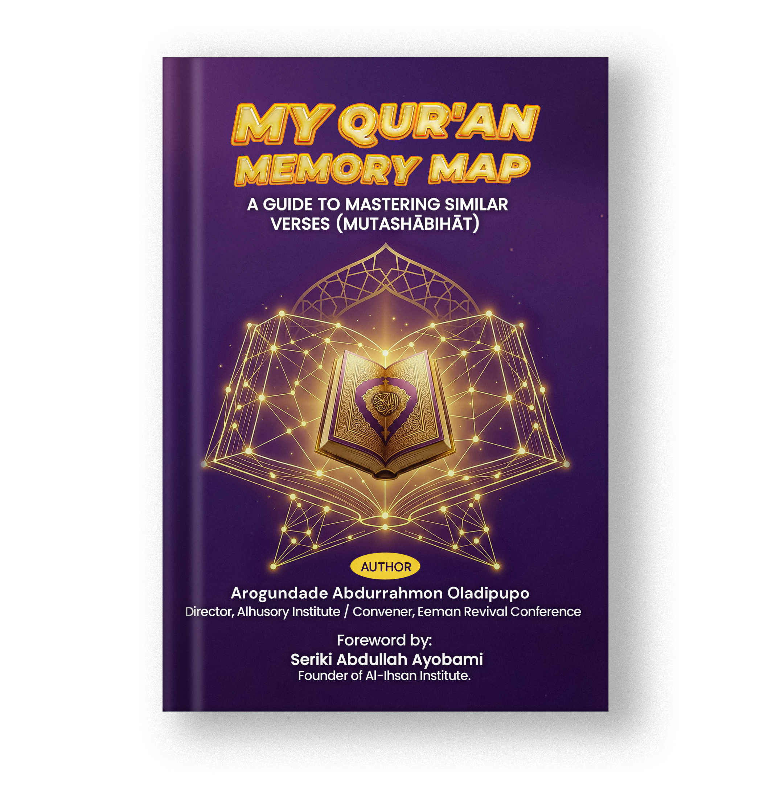

See the difference
Clear comparisons highlight exactly where similar verses diverge.

Alhusory InstituteA guide for Qur’an memorisers
My Qur’an Memory Map is a practical, juz-by-juz guide to mastering mutashābihāt — the verses that look alike but carry different details.
100+ copies sold
Already helping students revise with confidence

Why this book
Similar verses are one of the most persistent challenges in hifẓ. This book helps you see the difference, understand why it is there, and retain it for good.
Whether you are memorising, revising after hifẓ, teaching students, or leading prayer, My Qur’an Memory Map gives you a structured companion for stronger and more accurate recitation.
Clear comparisons highlight exactly where similar verses diverge.
Helpful explanations turn subtle wording changes into memorable anchors.
A juz-by-juz structure makes revision easier to return to, again and again.
Made for your journey
Take the next step
Message us to check availability, get current pricing, and order your copy.
Order via WhatsAppPaperback and eBook availability · Current pricing on request